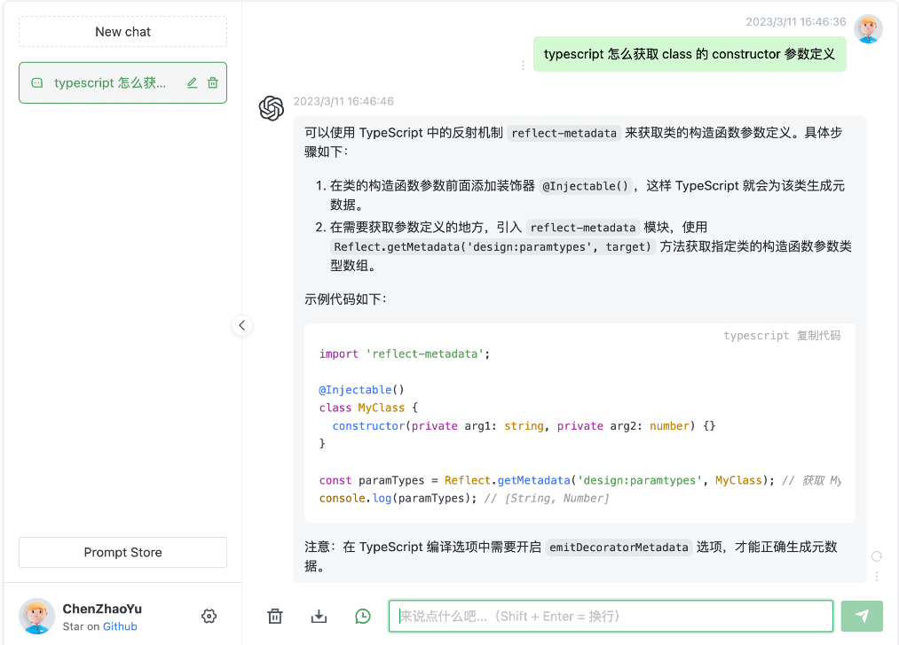

雪重
Python Developer
知识 汗水 灵感 机遇
基于chatgpt-web+mongodb构建社区问答收集系统
问：如何收集不同领域、不同专业人员的高质量问答对呢？
答：调用chatgpt4啊！
问：谁去调用？谁去想问题？怎么把用户的问题收集入库，供自己的模型进行训练呢？
答：开放一个免费的问答系统，后端调用openai，将社区千奇百怪的问题收集过来，喂给自己的模型。
chatgpt交互界面令人眼前一亮，自己如何搭建这样一套界面呢？
推荐项目：
https://github.com/Chanzhaoyu/chatgpt-web
界面看起来很清爽，使用Docker compose部署so easy

魔改，加入mongodb收集问答对
通过对开源项目源码阅读，原项目只是封装了一层对openai api的请求，响应内容会直接展示在web界面上。
寻找切入点：
service/src/index.ts中有如下方法
router.post('/chat-process', [auth, limiter], async (req, res) => {
此处就是向openai发起请求的位置
由于是stream的方式，实现界面上一字一字展示的效果，所以要在最后一个字结束时，将完整的消息插入数据库。
加入insermongo方法后，此段代码为
router.post('/chat-process', [auth, limiter], async (req, res) => {
res.setHeader('Content-type', 'application/octet-stream')
try {
const { prompt, options = {}, systemMessage, temperature, top_p } = req.body as RequestProps
let firstChunk = true
await chatReplyProcess({
message: prompt,
lastContext: options,
process: async (chat: ChatMessage) => {
//判断是否打印完成最后一个字
if(isLastMmessage(chat)) {
await insertDB(req.body, chat)
}
//以上，调用封装了mongodb insertDB方法插入数据库
res.write(firstChunk ? JSON.stringify(chat) : `\n${JSON.stringify(chat)}`)
firstChunk = false
},
systemMessage,
temperature,
top_p,
})
}
catch (error) {
res.write(JSON.stringify(error))
}
finally {
res.end()
}
})
封装mongodb部分代码如下
const { MongoClient } = require('mongodb');
import type { ChatMessage } from '../chatgpt'
import type { RequestProps } from '../types'
const user = '';
const password = '';
const dbName = '';
const dbHost = '';
const dbPort = 27017;
const uri = `mongodb://${user}:${password}@${dbHost}:${dbPort}/${dbName}?authSource=admin`;
// Connection URL
const url = uri;
const client = new MongoClient(url);
let collection;
async function main() {
// Use connect method to connect to the server
await client.connect();
console.log('Connected successfully to server');
const db = client.db(dbName);
collection = db.collection('message');
// the following code examples can be pasted here...
return 'done.';
}
async function insertDB(req: RequestProps, chat: ChatMessage) {
const question = {
prompt: req?.prompt,
parentMessageId: req?.options?.parentMessageId || '',
answerId: chat?.id,
answerText: chat?.text,
answerCreated: chat?.detail?.created,
answerModel: chat?.detail?.model,
}
await collection.insertOne(question);
}
main()
.then(console.log)
.catch(console.error)
export { insertDB }
insertDB方法里的question结构化了要入库的字段信息，样例数据如下
{
"_id" : ObjectId("a9f9f76fb"),
"prompt" : "这个分布似乎介于指数分布和帕累托分布之间",#当前问题
"parentMessageId" : "chatcmpl-MvYoOcZyxxhiCe",#上一个回答ip
"answerId" : "chatcmpl-75o5WFqZL6VT6o",#当前回答id
"answerText" : "根据您的描述，这个分布似乎介于指数分布和帕累托分布之间。为了详细阐述这两种概率分布，请允许我对它们进行简要介绍。",#当前回答
"answerCreated" : 1681458373,
"answerModel" : "gpt-4-0314"
}